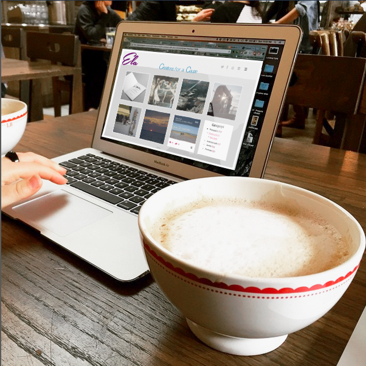

<!--

      <div class="span3">
          
       </div>
         <div class="span3"> <h2> Ela  |  Web Design </h2> <br>
        <p class="lead"> Ela is an art cooperative, selling works for charity. My role was to design the ecommerce product, logo and branding for this new cooperative.
        <h3> Timeline: 4 weeks. 
        <h3> Research: Surveys, Interview and hands on Usability Tests 
        <h3> Artifacts Created: Sketches, Site flows, Navigation, logo, branding, newsletter wireframes, sitemap, Web wireframes, and a Responsive Website  
        <h3> Tools: Photoshop</h3> 

        <p> With the initial concept in mind, I interviewed artists, fundraisers and potential buyers to establish user personas and a mental model of the product. I drew raw wireframes to get quick user reaction and feedback. With these ideas and user data, I spent about 3 weeks designing a responsive website, and concept for a tablet and mobile app. </p>
      </div>


      <div class="">
        <h2> Robin | iPhone App </h2>
          
         <p> Working directly with an entrepreneur with bigs ideas for a real estate app; we created Robin.  Robin shows curated home listings, with the ability to search or sort by commute time, save multiple searches and directly compare home features. I created a few different concepts for testing, then f user interface, and app design. 
        <h3> Timeline: 8 weeks. 
        <h3> Research: Surveys, Interview and hands on Usability Tests 
        <h3> Artifacts Created: Sketches, Site flows, Navigation, logo, branding, newsletter wireframes, sitemap, Web wireframes, and a Responsive Website  
        <h3> Tools: Photoshop</h3> 

        <p> a few different concepts for testing, 

          With the initial concept in mind, I interviewed artists, fundraisers and potential buyers to establish user personas and a mental model of the product. I drew raw wireframes to get quick user reaction and feedback. With these ideas and user data, I spent about 3 weeks designing a responsive website, and concept for a tablet and mobile app. </p>
      </div>


      <div class="">
        <h2> Mobile App Interface Design </h2>
          
         <p> Ela is an art cooperative, selling works for charity. I created the logo, branding, sitemap, site design and user interface. 
        <p class="lead"> Timeline: 4 weeks </p>
        <p> With the initial concept in mind, I interviewed artists, fundraisers and potential buyers to establish user personas and an idea of the kind of product they would use. I designed both website wireframes 

      </div>


_____________________
Ela  |  Web Design 
  Ela is an art cooperative, selling works for charity. My role was to design the ecommerce product, logo and branding for this new cooperative.

Timeline: 4 weeks
Research: surveys, interviews and hands on usability tests 
Artifacts Created: sketches, site flows, navigation, logo, branding, newsletter wireframes, sitemap, web wireframes, and a responsive website  
Tools: Photoshop, Illustrator, HTML, CSS, Javascript
 
  With the initial concept in mind, I interviewed artists, fundraisers and potential buyers to establish user personas and a mental model of the product. I drew raw wireframes to get quick user reaction and feedback.  Armed with some new ideas and the user data, I spent about 3 weeks designing a responsive website, and concept for a tablet and mobile app. I created siteflows, navigation, and wireframes for the both the website and newsletters.  I then created the logo, branding ideas, and complete visual design of the responsive e-commerce site. 


____________________
Robin  |  iPhone App
  Working directly with an entrepreneur with big ideas for real estate; we created Robin.  Robin shows curated home listings, with the ability to search or sort by commute time, save multiple searches and directly compare home features. 
      
Timeline: 8 weeks
Research: surveys, interviews, card sorts and hands on usability tests
Artifacts Created: content strategy, personas, userflows, sketches, wireframes, app interface, prototype
Tools: Omnigraffle, Sketch, Illustrator, Balsamiq, Typeform, Invision

  After an initial survey, I created a few different concepts for testing. I conducted user interviews with my own sketches and comparative analysis.  I established user personas, use-flows and wireframes for an initial concept. We gathered data through typeform surveys and conducted card sorts to establish the most important home-features and app-features of our users.  I used this data to create the on-boarding, mobile app navigation, wireframes, and a prototype. 
 

____________________
Cook Clips  |  Mobile and Tablet App
  Working directly with an entrepreneur wanting to solve a specific problem; I created the concept of Cook Clips.  Cook Clips is a cooking app that you can acutally use in the kitchen. It talks you through your favorite recipes with voice commands, and video clips. Cook Clips breaks each recipe down into steps; helping new cooks follow video tutorials as well as experienced cooks that just need a quick reminder of whats next. 

Timeline: 8 weeks
Research: surveys, interviews, and usability tests
Artifacts Created: content strategy, personas, userflows, sketches, wireframes, app interface, prototype
Tools: Omnigraffle, Sketch, Typeform, Invision

    I interviewed potential users about their cooking habits and app use in the kitchen, and developed a few key problems to solve. The personas varied greatly, and I first concentrated on a concept that meets one major use case.
  a few different concepts for testing,  


____________________
LIR  |  Logo and Branding
  Designed the logo and branding material for Li International Realty. 
 
Tools: Illustrator


____________________
Pilgrim Quilts  |  Logo and Branding
  Designed the logo and branding material for Pilgrim Quilts. 
 
Tools: Illustrator


____________________
655 12th St  |  Photography, Flyer and Street Banner
  Complete design and photography for a Condo sale. Photographed and assisted in staging the condo. Designed open house flyers and 3-ft street banner. Condo sold for over asking price in less than 1 week. 
 
Tools: Lightroom, Photoshop, Illustrator


____________________
No on F  |  Logo, branding and Ad design
  Volunteered as designer for grassroots campaign against Prop F in San Francisco.  Created logo, branding, Ad design and Visualizations for the website and social media.
Tools: Illustrator

  
_______________
Greeting Cards  |  Photography, Illustration and Design
  Hand lettering and Illustrated greeting cards.
Tools: sketching, Illustrator, Photoshop
  


-->
